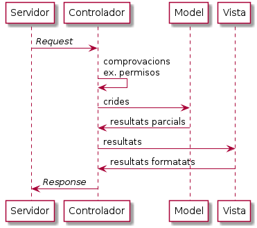

Arquitectura d’una aplicació Web¶
No t’espantis, no parlarem de maons.
Les aplicacions Web, i aquí ens centrarem en la part que ens toca programar, es poden fer de moltes maneres. A aquestes maneres li diem arquitectura de l’aplicació.
Per exemple, podem ficar tot el codi en un fitxer amb una única classe plena de mètodes estàtics. Aquesta opció probablement no ens resultarà massa pràctica a l’hora de mantenir-la. Per exemple, si hem de realitzar ampliacions o volem reaprofitar part del codi per altres aplicacions.
Una arquitectura molt més flexible podria ser separar el codi en àrees. Una divisió molt típica és l’anomenada Model-Vista-Controlador.

Model
Aquesta àrea és l’encarregada de gestionar la lògica dels elements amb que treballa l’aplicació.
Per exemple, si recordes l’exercici de l’entorn operatiu del Gat Renat la classe
GatRenatcorrespondria a aquesta part. Aquesta classe és la que ha de saber com «funciona» un Gat Renat per dins i no s’ha de preocupar de com serà vista des de fora.Controlador
Es tracta de saber què ens demanen, decidir si tenen privilegis per fer-ho i si les dades que ens passen són adequades,
Si tot és correcte, caldria fer les crides a les instàncies oportunes per que realitzin els càlculs i retornin els resultats corresponents.
Finalment, caldrà fer les crides oportunes amb aquests resultats per generar la resposta per l’usuari final. Aquesta resposta, en les aplicacions Web pot ser, per exemple, una pàgina HTML.
Aquesta àrea no se n’encarregarà ni de saber les regles de funcionament dels conceptes que manega l’aplicació, ni de com s’han de mostrar.
A l’exemple de l’entorn operatiu del Gat Renat, la classe
EntornOperatiucorrespondria més o menys a aquesta àrea. Dic més o menys perquè a l’exercici original, aquesta classe també se n’encarrega de composar la resposta pels usuaris.Vista
Aquesta àrea se n’encarrega exclusivament de composar la resposta. No ha de tenir ni idea de com se n’ha obtingut ni de si té o no sentit. Només l’ha de deixar en el format esperat pels usuaris finals.
Fixa’t que, d’aquesta manera, el model i la vista no es comuniquen mai. Són independents i, és possible modificar l’un sense haver de tocar l’altre. Per exemple, si hem d’afegir la nova regla de que un gat Renat no pot posar-se dret directament si està estirat, el que modificarem serà el model, però la vista no té perquè assabentar-se. De la mateixa manera, si ens cal modificar les pàgines HTML amb les que mostrem el resultat de manera que puguin ser llegides per persones amb dificultats visuals, el canvi es veurà reflectit a la vista, però el model no se n’hauria d’assabentar.
En aquesta arquitectura, el punt més sensible és sovint la capa de control doncs depen de les altres dues.
Per a aquests continguts, la part de la vista la resoldrem amb un programari ja existent. El freemarker. És tracta d’un sistema de plantilles que permet definir una pàgina HTML incompleta, en la que apareixen variables i, fins i tot, certa lògica, per acabar-la de composar a partir dels resultats que ens genera la capa de Control.
Exercici 2. A veure si ho he entès bé¶
Respon a les següents preguntes el millor que siguis capaç
El Model ha de saber de HTML? I de CSS?
Segons el diagrama quin actor se n’encarregarà de saber si la Usuària pot accedir a la pàgina que està demanant?
Perquè creus que el Model no passa els resultats directament a la Vista? Quines repercussions tindria que ho fes?
Recorda com vas resoldre l’exercici de l’entorn operatiu del Gat Renat. Probablement tenies tres classes (potser més?)
Indica per cada classe que vas fer servir, a quin actor del diagrama estava «jugant». En el text ja apareixen pistes.